Résultats obtenus par GATK
Visualiser les données produites par HaplotypeCaller, CombineGVCFs et GenotypeGVCFs (GATK)
Importation des données
HaplotypeCaller produit un fichier au format vcf (Variant Calling Format). Afin de visualiser les données qui y sont inscrites, un second outil : VariantsToTable est utilisé. Cet outil crée un fichier tabulé qui contient tous les champs choisi par l’utilisateur. Pour visualiser cette table sous forme de différents graphiques il est donc nécessaire d’importer les données dans R sous la forme d’une DataFrame.
Selon les bonnes pratiques de découverte de Variants à partir de données de RNA-seq données sur le site web de GATK, il faut réaliser un “hard-filtering”. C’est-à-dire choisir des valeurs seuils qui définissent quelles données sont considérées comme correcte de celles qui ne le sont pas. Pour cela, ils recommandent différentes valeurs pour différents champs en fonction de la variation (SNPs ou Indels). Ces valeurs sont présentées dans le tableau suivant :
| Sigle du champs utilisé | Valeur si SNPs | Valeur si INDELs |
|---|---|---|
| QD | <2.0 | <2.0 |
| FS | >60.0 | >200.0 |
| SOR | >3.0 | >10.0 |
| ReadPosRankSum | <-8.0 | <20.0 |
| MQ | <40.0 | |
| MQRankSum | <-12.5 | |
| InbreedingCoeff | <-0.8 |
Quelques graphiques
Tout d’abord, il faut savoir que HaplotypeCaller peut identifier 5 types de variant différents. Source1 Il s’agit des SNPs, MNPs, INDELs, Mixed, et Symbolic. Les SNPs représentent des “single nucleotide polymorphism”. Les MNPs représentent les “multi-nucleotide polymorphism”. Les INDELs représentent des évènements d’insertions ou de délétions de nucléotides. Les Mixed représentent une combinaison de SNPs et d’INDELs à une seule et même position. Les Symbolic montrent qu’il se passe quelque chose à cette position mais qu’on ne sait pas exactement ce qu’il représente. Parfois, HaplotypeCaller utilise l’allèle “non ref” ou * pour signifier la présence d’une suppression étendue ou des évènements indéfinis comme un trés grand allèle, la perte d’un seul allèle, la perte de deux allèles, etc. Source 2
La première question est donc : quels types de Variants a-t-il trouvé dans nos données ?
| Variants | Count |
|---|---|
| INDEL | 10829 |
| MIXED | 29 |
| SNP | 66945 |
Ce tableau montre que trois types de variants sont trouvés au sein des données. Il s’agit de SNPs, d’INDELs et de Variants Mixed.
Parmi les filtres proposés (uniquement pour les SNPs ou les INDELs) : quels sont ceux qui sont représentables pour l’individu 11GB ?
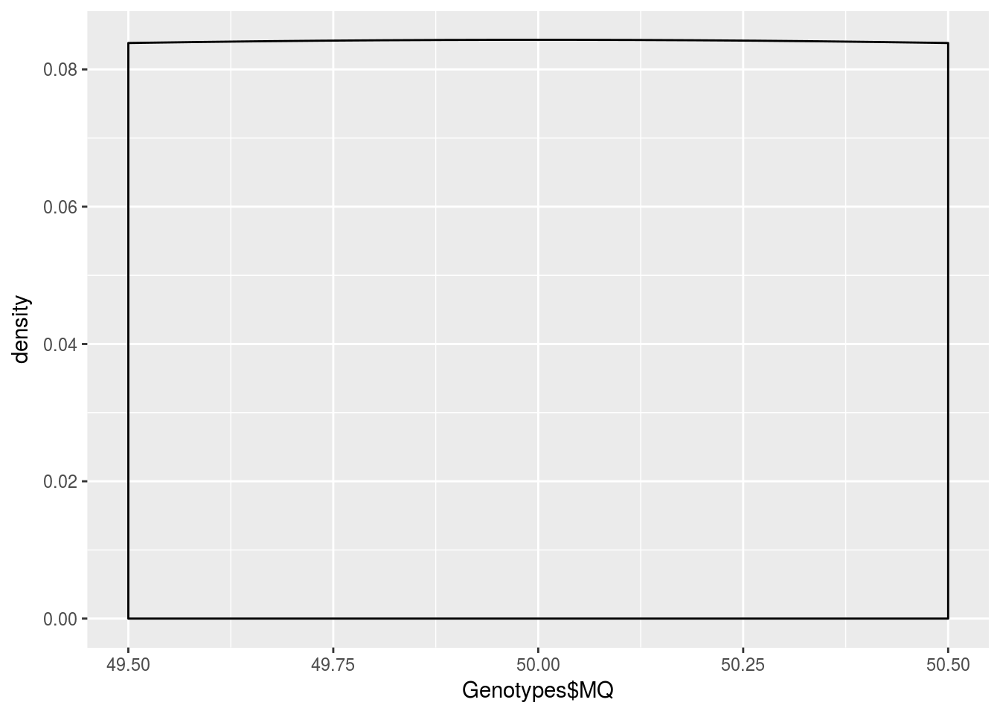
La valeur seuil pour RMSMappingQuality, si il s’agit de SNPs, est de 40. Ici, on prendrait donc tous les variants si on se base sur leur seuil pour les SNPs.
Remarque : Ce champs représente la racine carré de la qualité moyenne de l’alignement.
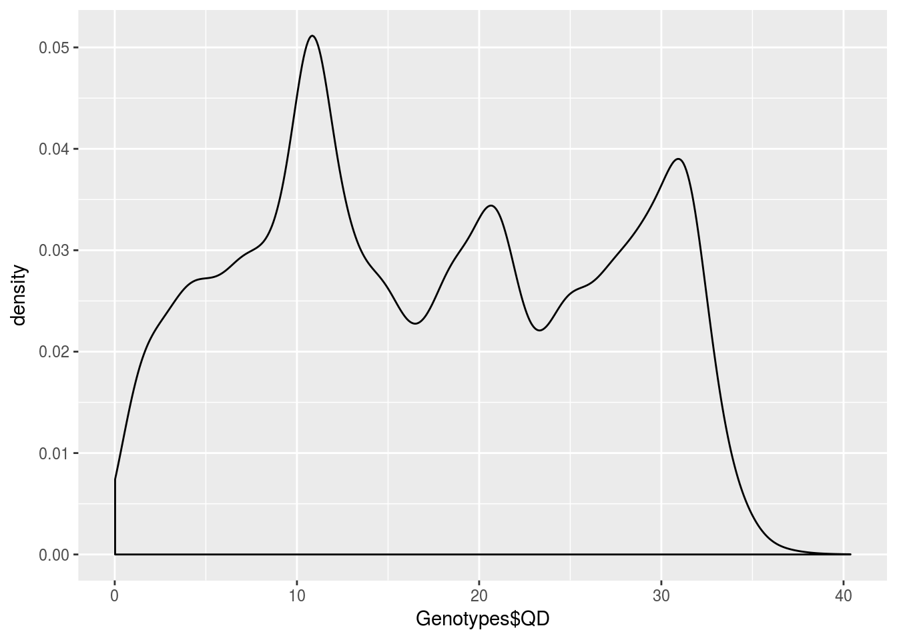
La valeur seuil pour QD, si il s’agit de SNPs, est de 2. Ici, on 3 pics à 12, 22 et 32. Il faudrait donc prendre tous les SNPs ayant une QD supérieur à 2.
Remarque : Ce champs représente la “Variant Confidence”. Il s’agit de la normalisation de la qualité par la profondeur pour limiter l’inflation lorsqu’il y a une profonde couverture.
## FS Count log_FS
## 1 0.000 57678 -Inf
## 2 0.368 1 -0.4341522
## 3 0.374 1 -0.4271284
## 4 0.387 1 -0.4122890
## 5 0.392 1 -0.4067139
## 6 0.393 1 -0.4056074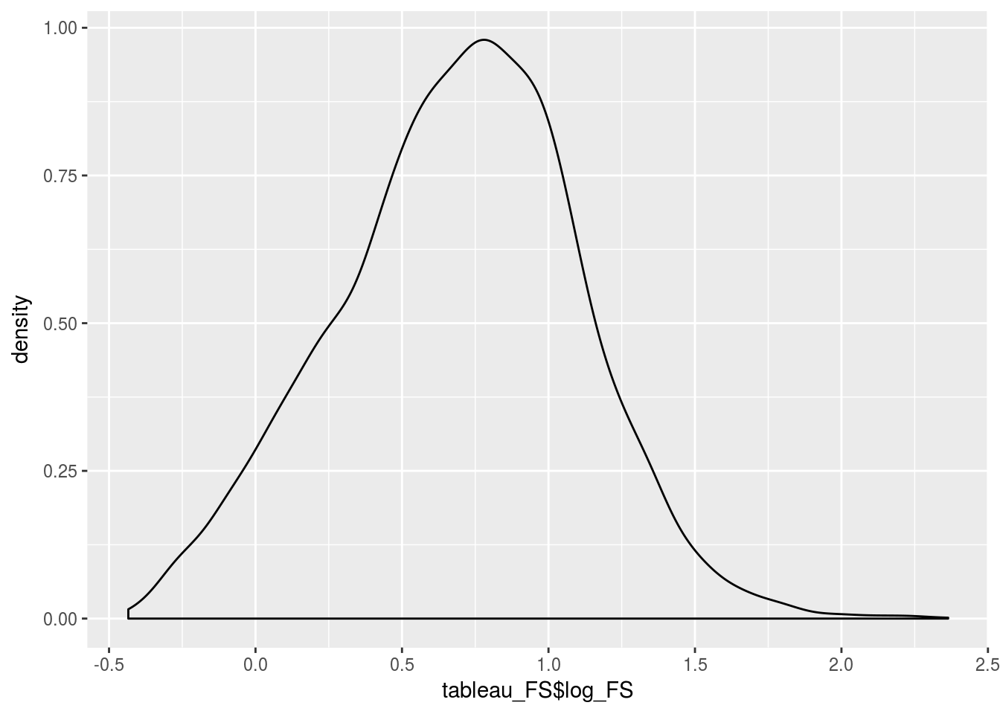
La valeur seuil pour FischerStrand, si il s’agit de SNPs, est 60. Ici, on prendrait donc les variants ayant un FS inférieur à log10(60)=1.78.
Remarque : Ce champs est la probabilité (en Phred-Scaled) d’avoir un biais dû au brin.
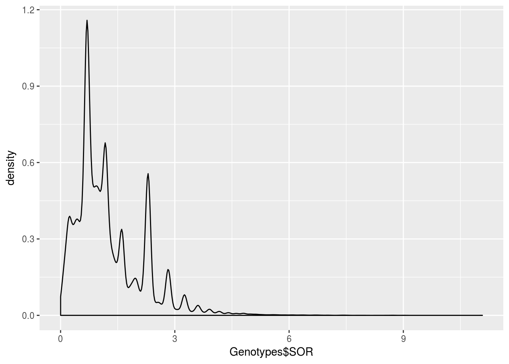
La valeur seuil pour StrandOddsRatio, si il s’agit de SNPs, est 3. Ici, on prendrait donc les variants ayant un SOR inférieur à 3.
Remarque : Ce champs estime le biais dû au brin. Ce champs a été créé car le FS tend à pénaliser les variants situé en fin d’exon.
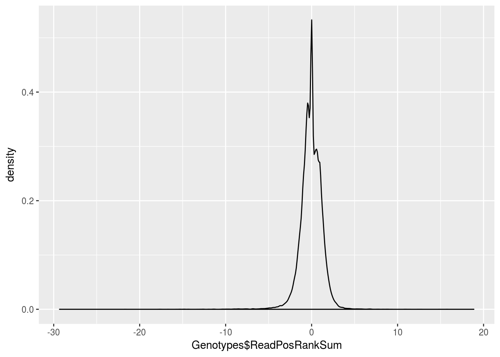
La valeur seuil pour ReadPosRankSum, si il s’agit de SNPs, est -8 ou 20,0 si il s’agit d’INDELs. Ici, on prendrait donc tous les variants supérieur à -8 si on se base sur leur seuil pour les SNPs.
Remarque : Ce champs vérifie que les variants ne se trouve pas uniquement en fin de reads, car c’est là où les séquenceurs font le plus d’erreur.

La valeur seuil pour MQRankSum, si il s’agit de SNPs, est -12,5. Ici, on prendrait donc tous les variants si on se base sur leur seuil pour les SNPs.
Remarque : Ce champs vérifie que les variants et la référence ont une qualité d’alignement similaire afin de limiter tous biais dû à l’alignement.
Autres filtres “représentables” :
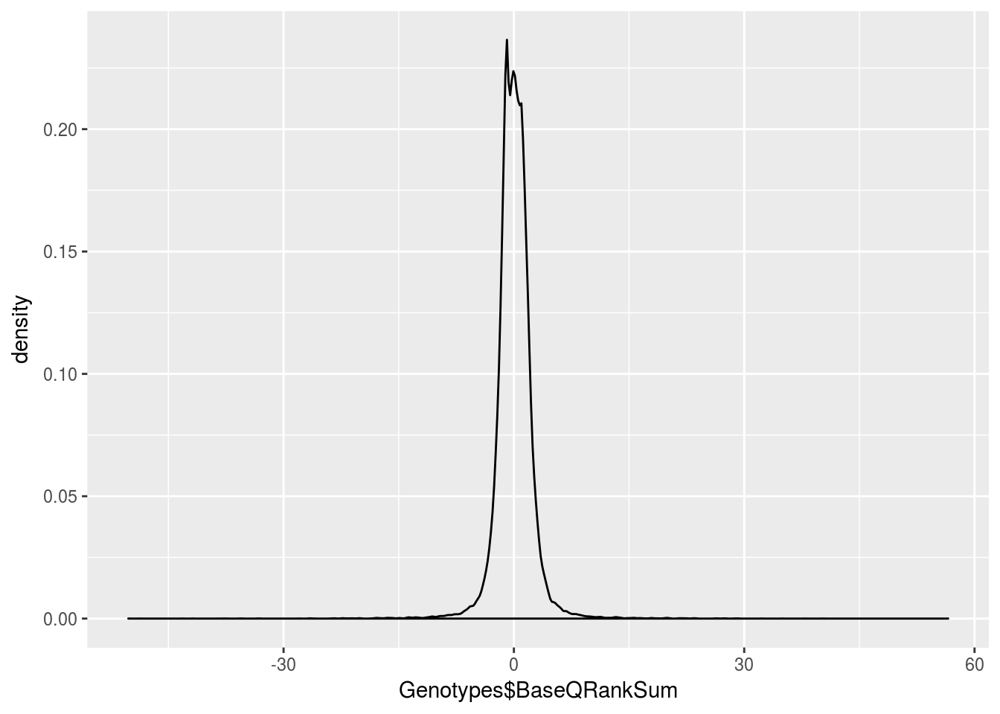
La valeur idéale est de 0. Si la valeur est supérieur à 0 cela signifie que la qualité des données est supérieur pour l’allèle alternatif et inversement pour une valeur inférieur à 0.
Remarque : Ce champs compare la qualité en base des données supportant l’allèle de référence et l’allèle alternatif.
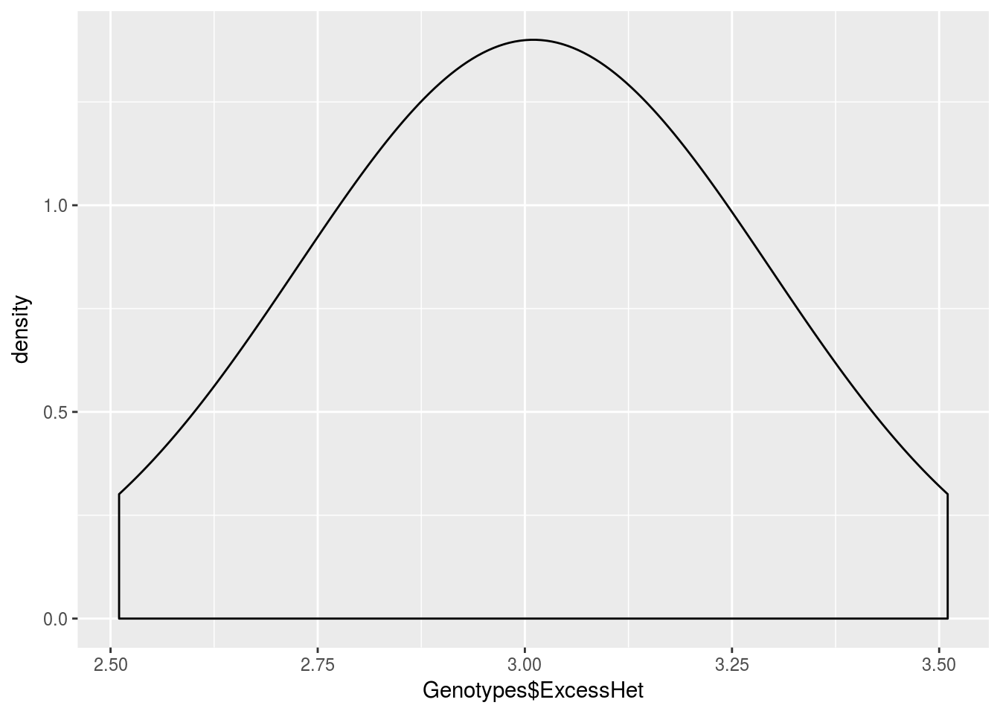
En abscisse il s’agit de la “phred-scale p-value”.
Remarque : Ce champs donne la probabilité d’avoir le même nombre ou plus d’hétérozygote qu’attendu sous l’équilibre de Hardy Weinberg.
## QUAL Count log_QUAL
## 1 10.15 3 1.006466
## 2 10.17 93 1.007321
## 3 10.18 7 1.007748
## 4 10.20 63 1.008600
## 5 10.21 6 1.009026
## 6 10.22 9 1.009451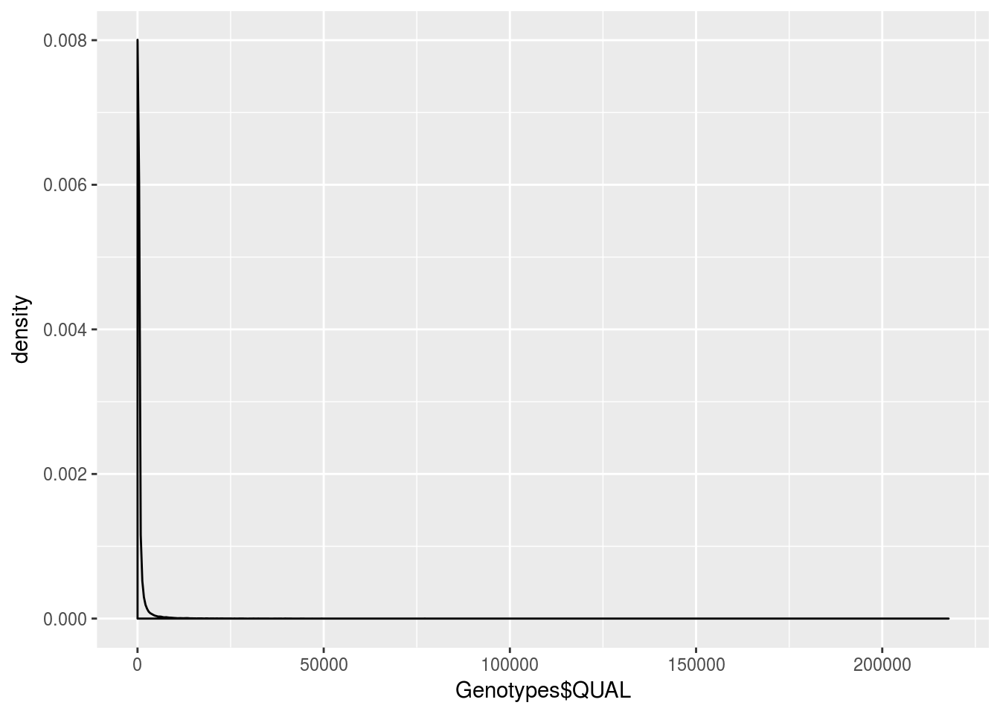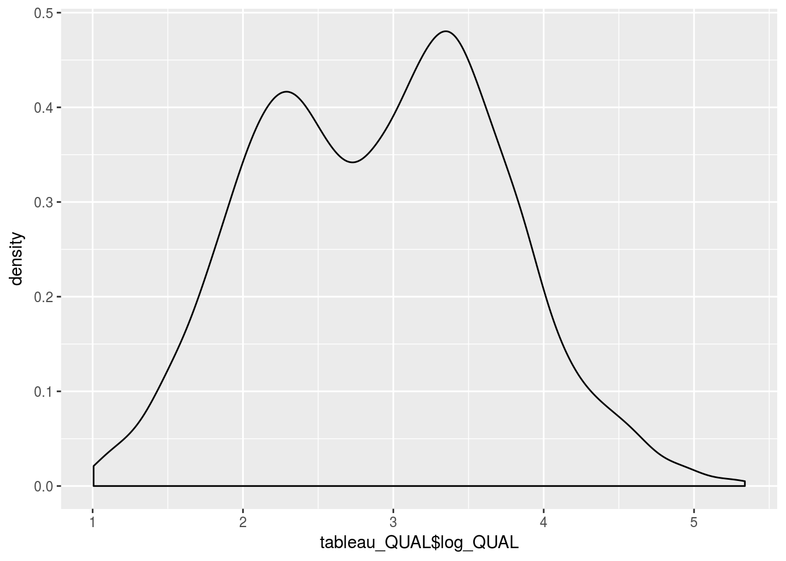
Remarque : Ce champs représente la “Variant confidence”.
## DP Count log_DP
## 1 10.15 3 1.006466
## 2 10.17 93 1.007321
## 3 10.18 7 1.007748
## 4 10.20 63 1.008600
## 5 10.21 6 1.009026
## 6 10.22 9 1.009451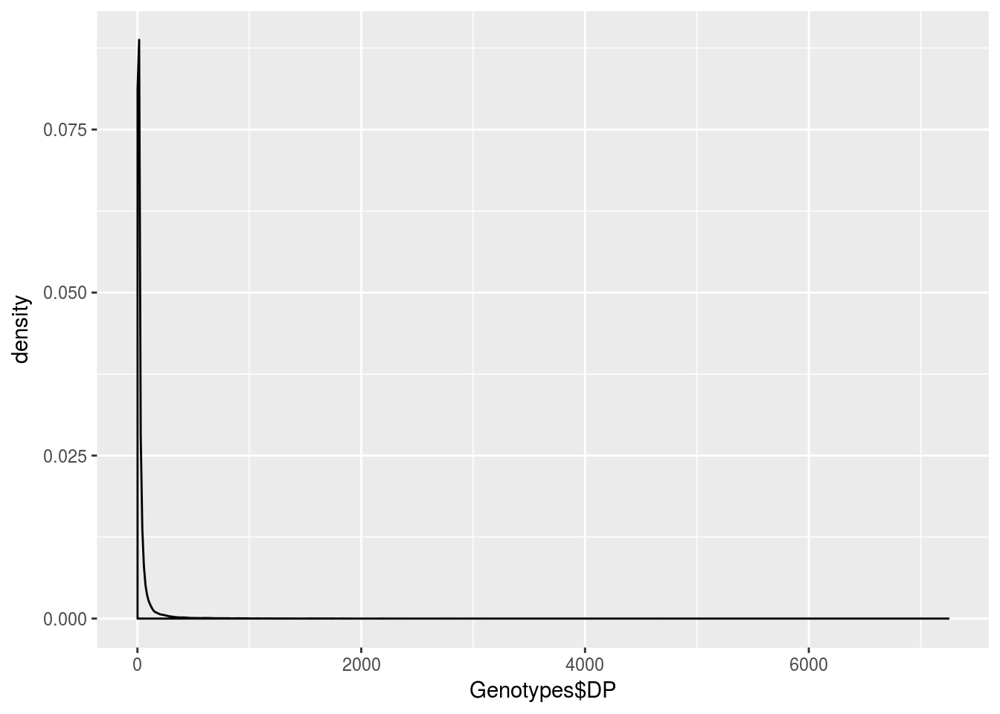
Remarque : Ce champs représente la profondeur de couverture totale.
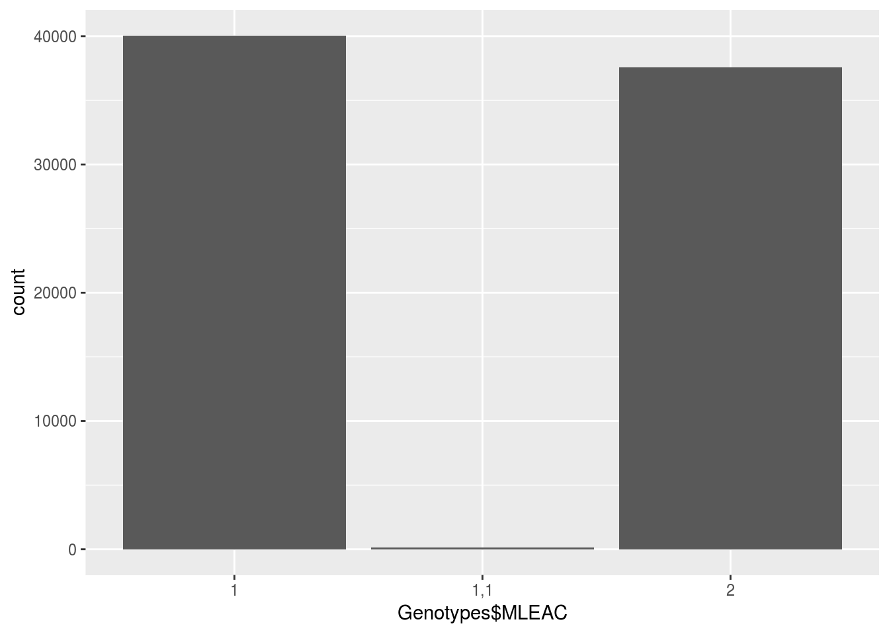
Remarque : Ce champs représente le Maximum de vraisemblance attendu pour les allèles en nombre d’occurence.
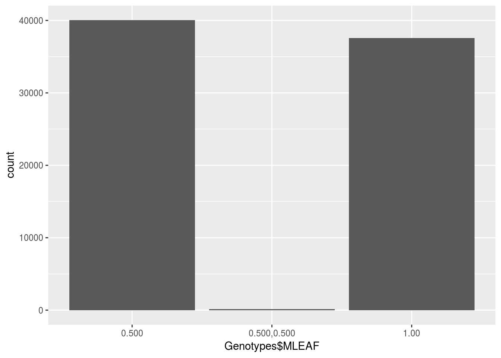
Remarque : Ce champs représente le Maximum de vraisemblance attendu pour les allèles en fréquence.
Copyright © 2018 | Elise GUERET